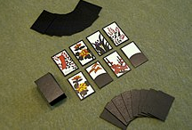

Créée le 23 septembre 1889, Nintendo se nomme d’abord Nintendo Koppaï , il s'agit d'une entreprise artisanale dont le créateur se nomme Fusajiro Yamauchi.

Il a créé les hanafuda (jeux de cartes), qu’il a fabriqués lui-même ,ses cartes deviennent très populaires.
Il faudra attendre 1949 et l’arrivée du jeune Hiroshi Yamauchi, le petit-fils de Sekiryo Yamauchi (et qui sera président de Nintendo jusqu’en 2002), pour voir les activités de la société se diversifier concrètement. C’est grâce à un contrat signé avec Disney en 1959 que la société prend une envergure internationale et entre en bourse en 1962 , sous le nom de Nintendo Co. Ltd.En 1969 est créé le département Games dirigé par un nouveau venu dans l’entreprise, Gunpei Yokoi. Le premier jouet de ce dernier se nomme Ultra Hand et se vendra à 1,2 million d’exemplaires. Par la suite, Nintendo lancera d’autres jouets avec plus ou moins de succès.

Gunpei Yokoi
C’est au début des années 1970 que Nintendo se tourne vers le marché naissant des jeux vidéo.